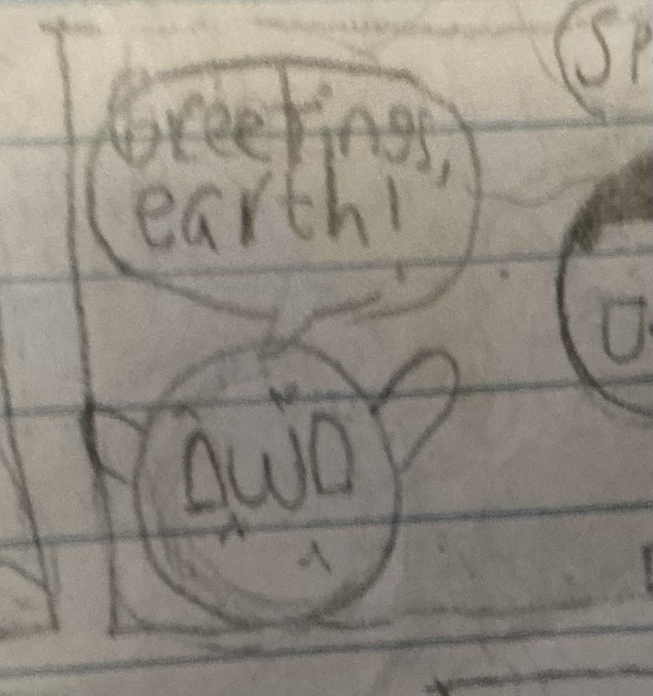

Grassball


| Pronouns | They/them |
|---|---|
| Origin | Created in 1960 |
| Species | Grass-textured ball |
| Family | Grass (sibling) |
| Occupation | Donut stand owner |
| Business Founded | 1971 |
| Business Co-founder | Grass |
| Friend of Jstar | Since 2024 |
| Starland History | Third person ever in Starland |
Overview
Grassball is a character in the redJSR universe and one of Starland's original residents. Created in 1960, they are recognized as the third person ever in Starland and are considered one of its OGs.
Appearance
Grassball is a round ball covered in a grass texture. They originated from Grass, who is also their sibling.
Personality and Relationships
Grassball has been Jstar's talking friend since 2024. They are an established part of Starland's history and have a long-running connection to the community.
Abilities
Grassball can transform their surface into different textures, including sand, water, and fire.
Business
In 1971, Grassball and their sibling Grass co-founded a donut stand, which Grassball runs. The business is one of their defining activities outside their friendship with Jstar.
History in Starland
Grassball was created in 1960 and became the third person ever in Starland. Their long history makes them one of the city's original residents, predating their friendship with Jstar by decades.
Relationships
- Grass: Grassball's sibling and co-founder of their donut stand.
- Jstar: Grassball's talking friend since 2024.
Part of the redJSR Wiki.